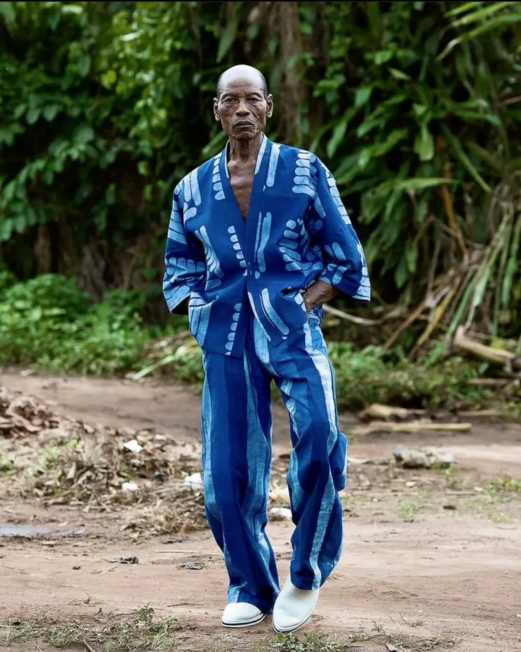
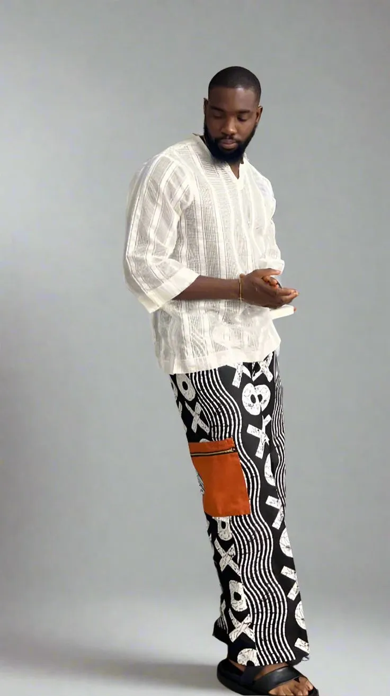

KUNA est née à Cotonou, au cœur du Bénin, d'une conviction simple mais profonde : la mode est un acte d'affirmation. Ce n'est pas seulement ce que l'on porte, c'est ce que l'on dit au monde sans prononcer un seul mot.
Fondée par des créateurs visionnaires issus de la culture africaine contemporaine, KUNA puise son inspiration dans la richesse des traditions vestimentaires du continent tout en les réinterprétant avec un regard résolument moderne.
Chaque collection est un dialogue entre le passé et le présent, entre l'héritage et l'innovation, entre la technique artisanale et les tendances contemporaines.


Chaque pièce reflète une vérité. Nous ne suivons pas la mode, nous créons la vôtre.
La qualité n'est pas un accident. Chaque couture est le résultat d'un savoir-faire cultivé avec patience.
L'Afrique est notre source d'inspiration infinie. Nous la portons avec fierté dans chaque création.